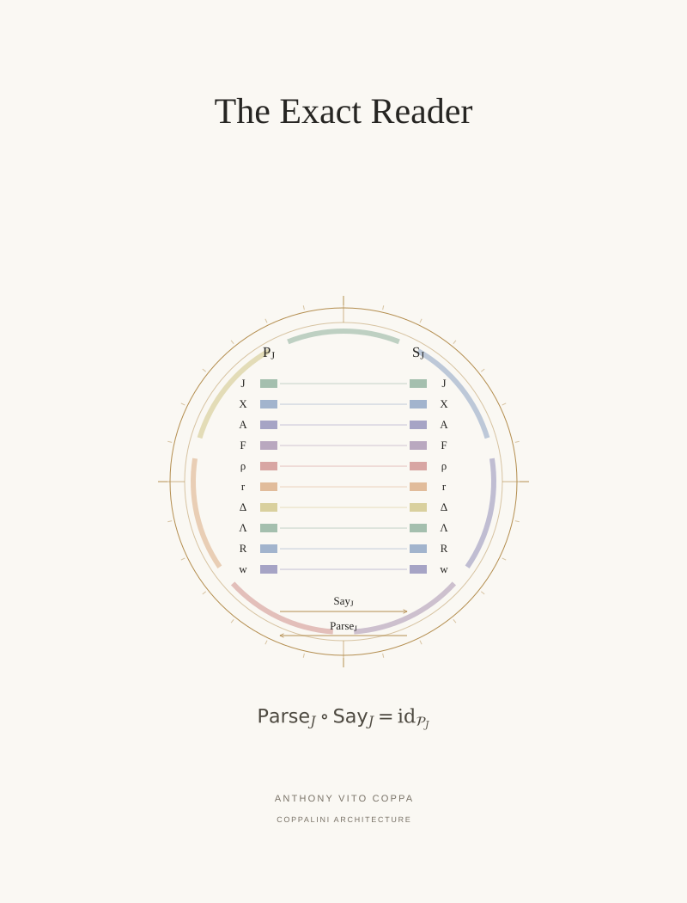

P 06 / Principal paper / COVER ARTWORK
The Exact Reader


Ten packet fields correspond to the ten labeled fields of a controlled sentence record.
P 06 / Principal paper / COVER ARTWORK

Ten packet fields correspond to the ten labeled fields of a controlled sentence record.